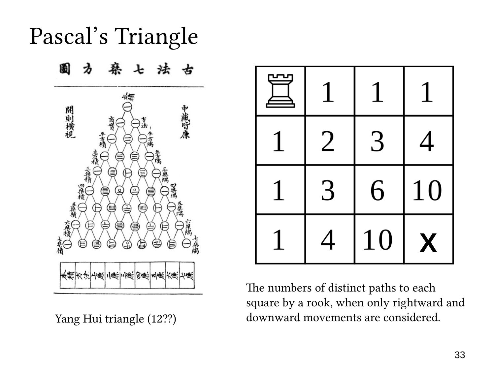

L1.7 · 第 33 页讲解原文
查看这一页课件

棋盘路径：两个 10 的递推与组合解释
这一页在第三行、第四列与第四行、第三列各填入 10。
到第三行、第四列需要两次向下、三次向右，共五步。选出两步向下即可决定路径，所以
P(2,3)=(25)=10.
图上的递推计算为左边的 6 加上上边的 4：
6+4=10.
对称的第四行、第三列需要三次向下、两次向右，因此
P(3,2)=(35)=10.
它由上边的 6 与左边的 4 相加得到。
这恰好体现
(25)=(14)+(24).
按最后一步向下分类，前四步需要一次向下，有 (14) 条；按最后一步向右分类，前四步需要两次向下，有 (24) 条。
递推方法适合逐格填写整张表，组合数方法适合直接计算某个格子。两种方法数的是同一批路径，因此结果一致。